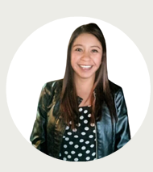
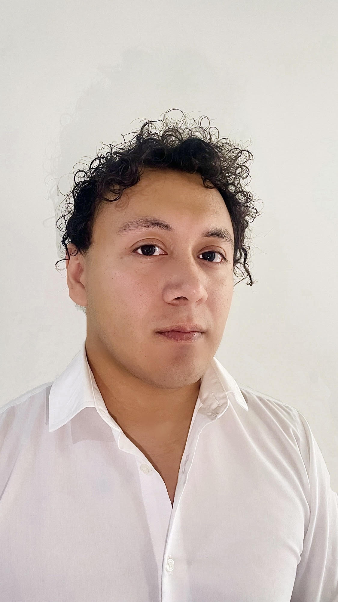
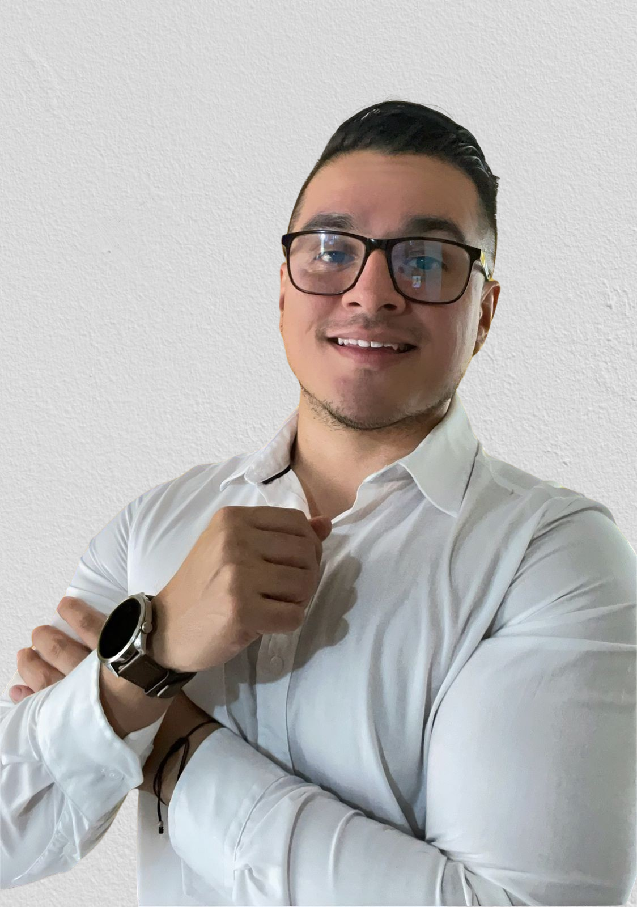
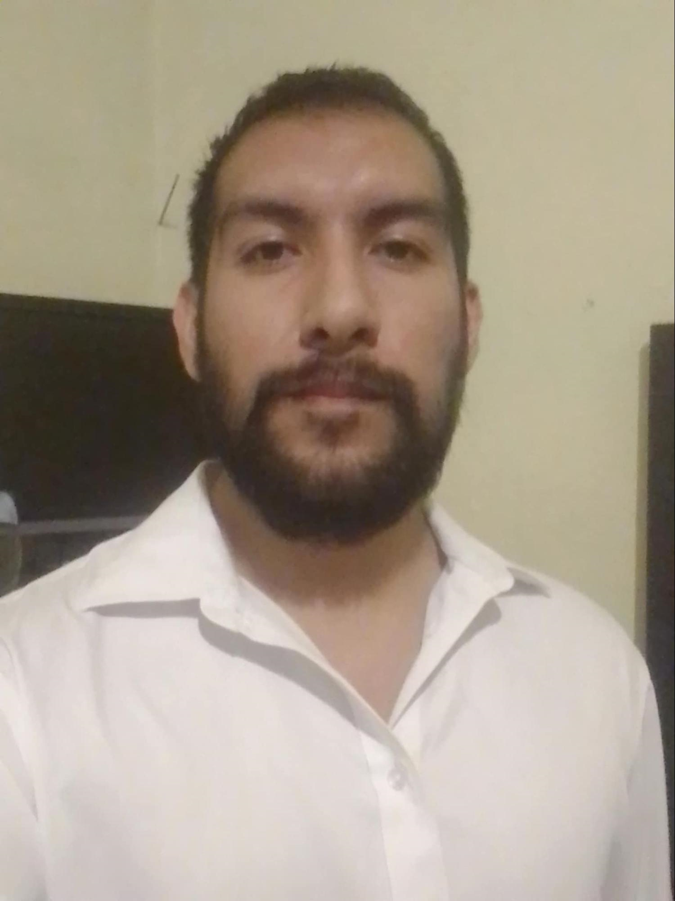
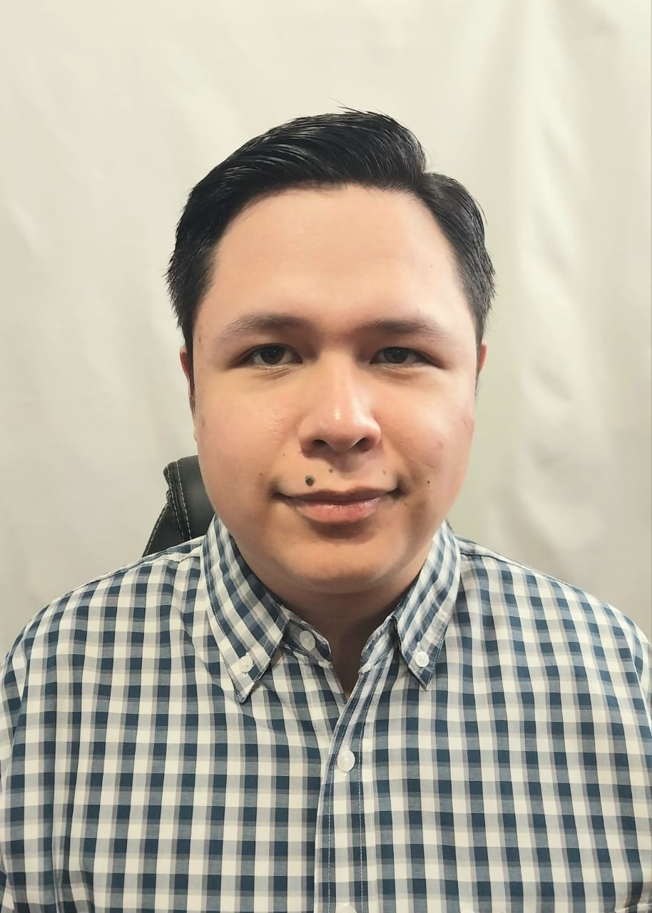
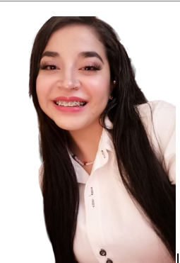
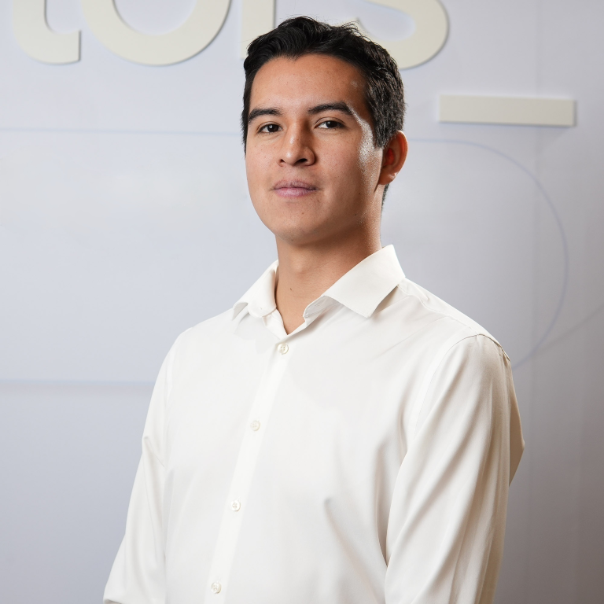

-

Arely Johana Frias Cruz
Developer FullStack / Pedagoga
Mi experiencia está basada en la educación y la tecnología,lo que me permite crear soluciones educativas innovadoras y adaptativas. Contáctame -

Joel Herrera Anleh
Developer FullStack
Full Stack Developer | Economist | Finance Professional Contáctame -
Mitzi Fernanda Martínez Venegas
FullStack Developer
Experiencia con equipos multidisciplinarios y en el desarrollo de proyectos bajo requerimientos Contáctame -

Felipe Alejandro Mejía Vázquez
Full Stack Developer
Artífice de sueños imposibles, convirtiendo ideas en realidad web. Contáctame -

Alberto Montes de Oca
Full-Stack Developer Jr/iOS Developer Jr
Me gustaban los Teletubbies Contáctame -
Aram Zhaid Patlán Tovar
FullStack Developer
Desarrollador de profesión, Economista por convicción. Interesado en la industria de la tecnologia y el analisis de datos. Contáctame -

Diego Antonio Rivas Rios
Backend Developer | Full Stack Developer
Interesado en el análisis, diseño y construcción de software de acuerdo con los requerimientos de forma ágil Contáctame -

Erick Eduardo Rodríguez Campos
Backend developer / Full Stack developer
Desarrollador egresado de la carrera Ciencias de la Computación. Interesado en el análisis, diseño y construcción de software de acuerdo con los requerimientos de forma ágil. Contáctame -

Andrea Rojas Galeana
Full-Stack Developer / Ingeniera en Desarrollo de Software
Las oportunidades no ocurren, se crean. Contáctame -

Carlos Alberto Villarreal Noyola
Full Stack Developer | Físico & Matemático
Busco soluciones para salvar al planeta de la humanidad. Contáctame